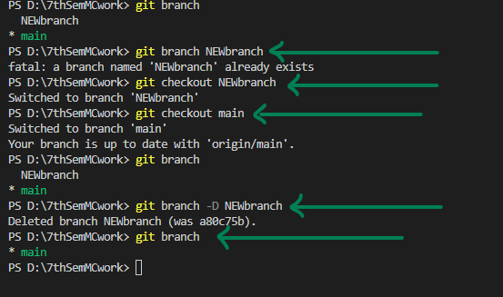

Welcome To Git Website
Git init:
The git init command creates a new Git repository. It can be used to convert an existing, unversioned project to
a Git repository or initialize a new, empty repository. Most other Git commands are not available outside of an initialized repository,
so this is usually the first command you will run in a new project.

Git status:
The git status command displays the state of the working directory and the staging area. It lets you see which changes have been staged,
which haven't, and which files aren't being tracked by Git. Status output does not show you any information regarding the committed
project history.


Git add:
The git add command adds a change in the working directory to the staging area. It tells Git that you want to include updates to a particular
file in the next commit. However, git add doesn't really affect the repository in any significant way—changes are not actually recorded until
you run git commit .

Git commit:
The git commit command captures a snapshot of the project's currently staged changes. Committed snapshots can be thought of as
“safe” versions of a project—Git will never change them unless you explicitly ask it to. Enter git commit -m ''
at the command line to commit new files/changes to the local repository. For the , you can enter anything that
describes the changes you are committing.
Git push:
The git push command is used to upload local repository content to a remote repository. Pushing is how you transfer commits from your
local repository to a remote repo. It's the counterpart to git fetch , but whereas fetching imports commits to local branches, pushing exports
commits to remote branches.

Git remote add origin:
TObtain the git remote add URL for the remote repository and add credentials if needed. Run the git remote add origin command from your local
repository with the --set-upstream and the name of the active branch to push.
Git pull:
The git pull command is used to fetch and download content from a remote repository and immediately update the local repository to match that
content. Merging remote upstream changes into your local repository is a common task in Git-based collaboration work flows.


Merge conflict:
A merge conflict is an event that takes place when Git is unable to automatically resolve differences in code between two commits. Git can
merge the changes automatically only if the commits are on different lines or branches.


Branching:
In Git, branches are a part of your everyday development process. Git branches are effectively a pointer to a snapshot of your changes. When
you want to add a new feature or fix a bug—no matter how big or how small—you spawn a new branch to encapsulate your changes.
you can find out how many branches you have by git branch command you can make new branch by "git branch branchname" command. Now you can see
by using the command g"git branch" that you have two branches,m one is main and the other is NEWbranch.

you can see that if one branch is made 2nd one is not made with the same name. You can switched to branch by using "git checkout branchname"
command. You can delete the branch by using "git -D branchname" command.